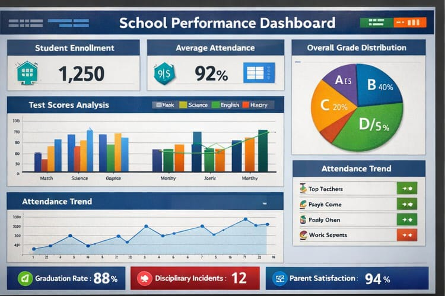
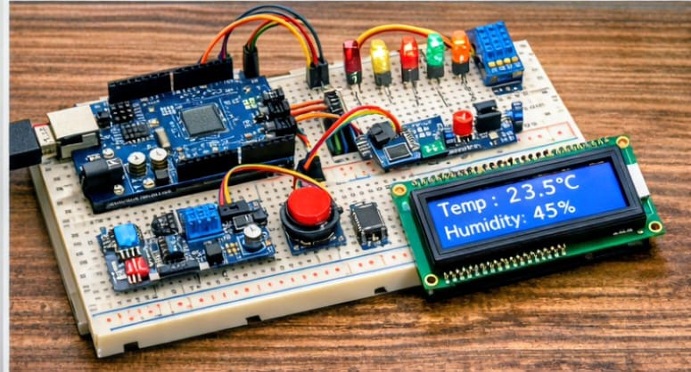

Interactive Excel Dashboard

This project showcases our ability to integrate pivot tables, slicers, and custom icons into a professional dashboard. It was designed to help visualize academic data and improve decision-making. Stephene led the technical setup, while Leah contributed to the design layout. The dashboard is interactive, user-friendly, and adaptable to different datasets. It represents the group’s strength in combining IT skills with visual creativity.
Poster Design Campaign
This campaign involved creating posters for school events using CapCut, PowerPoint, and Adobe Express. Leah led the design process, ensuring bold layouts and impactful messaging. The posters were used to promote awareness and engagement across the school community. The project highlighted the group’s ability to communicate ideas visually. It also demonstrated teamwork, with each member contributing to content and design.
Group Portfolio Website
.png)
We collaborated to design and build this responsive portfolio website. The project involved structuring HTML files, styling with CSS, and adding JavaScript interactivity. Each member contributed content, bios, and project details to ensure authenticity. The site demonstrates our ability to blend technical and creative skills. It serves as a living showcase of our teamwork and innovation.
Electronics Prototype

James led the development of a hardware prototype focused on circuit design and testing. The project involved building a functional model and troubleshooting technical issues. It highlighted our ability to apply theoretical knowledge in practical settings. The prototype was presented during a school exhibition, gaining positive feedback. This project reflects our commitment to hands-on learning and innovation.